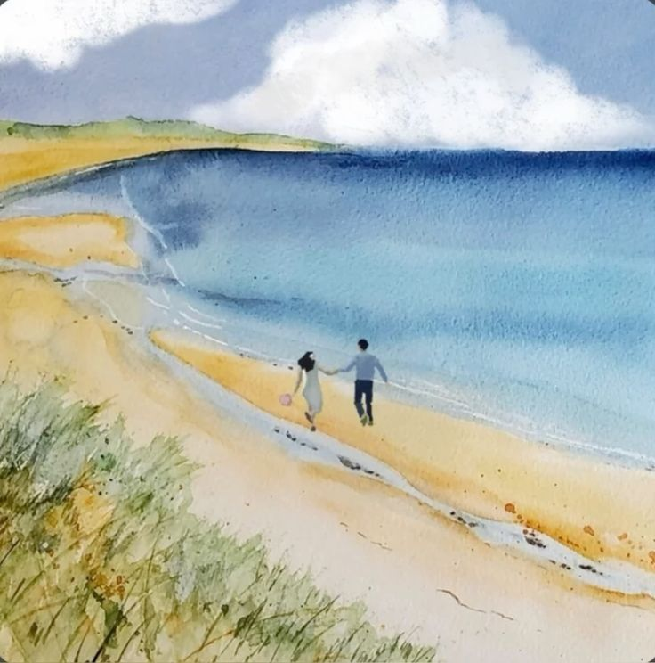

Blue
Penyanyi: yung kai
Indie Pop
Rilis 2024
Blue lahir dari perasaan yang meluap saat yung kai menonton drama Tiongkok bersama seseorang yang ia sukai. Nuansa laut dan langit dituangkan jadi lagu cinta yang hangat dan mendayu.